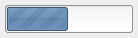
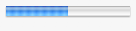

| Version: 2.9.4 |
#include </home/zeitlin/src/wx/github/interface/wx/gauge.h>
 Inheritance diagram for wxGauge:
Inheritance diagram for wxGauge:A gauge is a horizontal or vertical bar which shows a quantity (often time).
wxGauge supports two working modes: determinate and indeterminate progress.
The first is the usual working mode (see SetValue() and SetRange()) while the second can be used when the program is doing some processing but you don't know how much progress is being done. In this case, you can periodically call the Pulse() function to make the progress bar switch to indeterminate mode (graphically it's usually a set of blocks which move or bounce in the bar control).
wxGauge supports dynamic switch between these two work modes.
There are no user commands for the gauge.
This class supports the following styles:
 |  |  |
| wxMSW appearance | wxGTK appearance | wxMac appearance |
Public Member Functions | |
| wxGauge () | |
| Default constructor. | |
| wxGauge (wxWindow *parent, wxWindowID id, int range, const wxPoint &pos=wxDefaultPosition, const wxSize &size=wxDefaultSize, long style=wxGA_HORIZONTAL, const wxValidator &validator=wxDefaultValidator, const wxString &name=wxGaugeNameStr) | |
| Constructor, creating and showing a gauge. | |
| virtual | ~wxGauge () |
| Destructor, destroying the gauge. | |
| bool | Create (wxWindow *parent, wxWindowID id, int range, const wxPoint &pos=wxDefaultPosition, const wxSize &size=wxDefaultSize, long style=wxGA_HORIZONTAL, const wxValidator &validator=wxDefaultValidator, const wxString &name=wxGaugeNameStr) |
| Creates the gauge for two-step construction. | |
| int | GetBezelFace () const |
| Returns the width of the 3D bezel face. | |
| int | GetRange () const |
| Returns the maximum position of the gauge. | |
| int | GetShadowWidth () const |
| Returns the 3D shadow margin width. | |
| int | GetValue () const |
| Returns the current position of the gauge. | |
| bool | IsVertical () const |
Returns true if the gauge is vertical (has wxGA_VERTICAL style) and false otherwise. | |
| virtual void | Pulse () |
| Switch the gauge to indeterminate mode (if required) and makes the gauge move a bit to indicate the user that some progress has been made. | |
| void | SetBezelFace (int width) |
| Sets the 3D bezel face width. | |
| void | SetRange (int range) |
| Sets the range (maximum value) of the gauge. | |
| void | SetShadowWidth (int width) |
| Sets the 3D shadow width. | |
| void | SetValue (int pos) |
| Sets the position of the gauge. | |
| wxGauge::wxGauge | ( | ) |
Default constructor.
| wxGauge::wxGauge | ( | wxWindow * | parent, |
| wxWindowID | id, | ||
| int | range, | ||
| const wxPoint & | pos = wxDefaultPosition, |
||
| const wxSize & | size = wxDefaultSize, |
||
| long | style = wxGA_HORIZONTAL, |
||
| const wxValidator & | validator = wxDefaultValidator, |
||
| const wxString & | name = wxGaugeNameStr |
||
| ) |
Constructor, creating and showing a gauge.
| parent | Window parent. |
| id | Window identifier. |
| range | Integer range (maximum value) of the gauge. See SetRange() for more details about the meaning of this value when using the gauge in indeterminate mode. |
| pos | Window position. |
| size | Window size. |
| style | Gauge style. |
| validator | Window validator. |
| name | Window name. |
| virtual wxGauge::~wxGauge | ( | ) | [virtual] |
Destructor, destroying the gauge.
| bool wxGauge::Create | ( | wxWindow * | parent, |
| wxWindowID | id, | ||
| int | range, | ||
| const wxPoint & | pos = wxDefaultPosition, |
||
| const wxSize & | size = wxDefaultSize, |
||
| long | style = wxGA_HORIZONTAL, |
||
| const wxValidator & | validator = wxDefaultValidator, |
||
| const wxString & | name = wxGaugeNameStr |
||
| ) |
Creates the gauge for two-step construction.
See wxGauge() for further details.
| int wxGauge::GetBezelFace | ( | ) | const |
Returns the width of the 3D bezel face.
| int wxGauge::GetRange | ( | ) | const |
Returns the maximum position of the gauge.
| int wxGauge::GetShadowWidth | ( | ) | const |
Returns the 3D shadow margin width.
| int wxGauge::GetValue | ( | ) | const |
Returns the current position of the gauge.
| bool wxGauge::IsVertical | ( | ) | const |
Returns true if the gauge is vertical (has wxGA_VERTICAL style) and false otherwise.
| virtual void wxGauge::Pulse | ( | ) | [virtual] |
Switch the gauge to indeterminate mode (if required) and makes the gauge move a bit to indicate the user that some progress has been made.
| void wxGauge::SetBezelFace | ( | int | width | ) |
Sets the 3D bezel face width.
| void wxGauge::SetRange | ( | int | range | ) |
Sets the range (maximum value) of the gauge.
This function makes the gauge switch to determinate mode, if it's not already.
When the gauge is in indeterminate mode, under wxMSW the gauge repeatedly goes from zero to range and back; under other ports when in indeterminate mode, the range setting is ignored.
| void wxGauge::SetShadowWidth | ( | int | width | ) |
Sets the 3D shadow width.
| void wxGauge::SetValue | ( | int | pos | ) |
Sets the position of the gauge.
The pos must be between 0 and the gauge range as returned by GetRange(), inclusive.
This function makes the gauge switch to determinate mode, if it was in indeterminate mode before.
| pos | Position for the gauge level. |